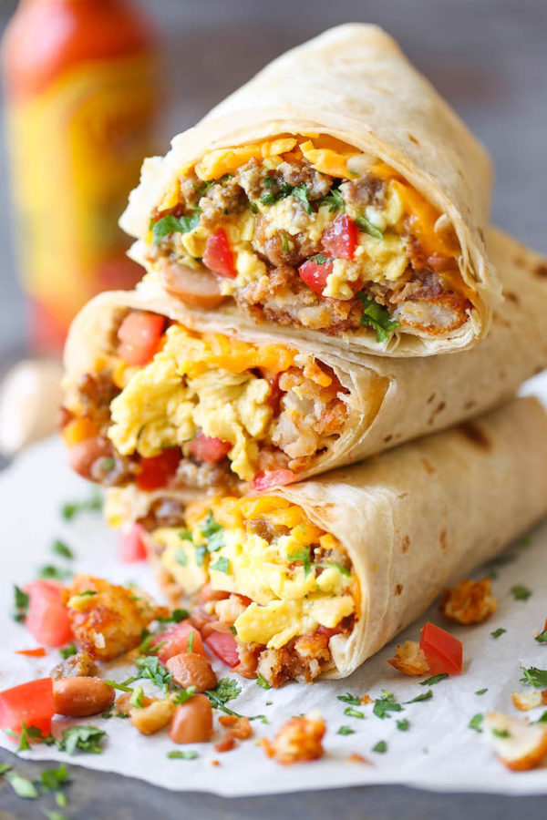

Burritos

Make these vegetarian breakfast burritos ahead and freeze for an easy, on-the-go meal that's warmed in a microwave when ready to serve.
Ingredients
- 1 large sweet potato, cut into 1/2-inch pieces
- 2 tablespoons olive oil, divided
- kosher salt and ground black pepper to taste
- 6 eggs, lightly beaten
- ¼ cup milk
- 1 cup shredded pepper Jack cheese
- 6 large flour tortillas
- 1 (15 ounce) can black beans, rinsed and drained
- ¾ cup cooked vegan chorizo (Optional)
- ½ cup prepared salsa verde
- hot sauce or salsa, for serving
Steps
- Preheat oven to 425 degrees F (220 degrees C). Spread sweet potatoes on a baking sheet and drizzle with 1 tablespoon olive oil. Season well with salt and pepper and toss to coat.
- Roast sweet potatoes until tender and browned, 15 to 20 minutes. Let cool to room temperature.
- Heat remaining olive oil in a large skillet over medium-low heat. Whisk eggs and milk together in a medium bowl and season with salt and pepper. Pour eggs into pan and cook, stirring frequently with a rubber spatula, until they begin to set, about 2 to 3 minutes. Sprinkle cheese over eggs and continue to cook, stirring frequently, until eggs are no longer runny, 3 minutes more. Remove from heat and let cool to room temperature.
- Wrap tortillas in a dish cloth and microwave for 30 seconds to 1 minute, until pliable. To assemble each burrito: Spread about ¼ cup sweet potatoes, ⅓ cup scrambled eggs, ¼ cup black beans and 2 tablespoons chorizo in a horizontal line across the middle of the tortilla, leaving about 2 inches on either side. Drizzle with 1 to 2 tablespoons salsa verde. Fold left and right sides over the filling, then tightly roll from the bottom of the tortilla to form a burrito. Tightly wrap in plastic wrap or aluminum foil. Repeat with remaining tortillas, and freeze for up to 1 month. Alternatively, refrigerate for up to three days.
- To serve: Remove burrito from plastic or foil and place on a plate in the microwave. Microwave on high for 4 to 5 minutes, until filling is hot and tortilla is tender. Serve immediately with your choice of hot sauce or salsa. If reheating from the refrigerator, microwave on high for 1 ½ to 2 minutes.